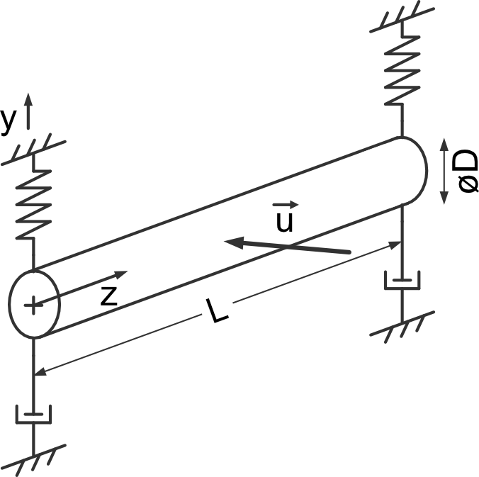

Fluid dynamics: solving of ODEs III
{kind=link}
An elastic supported cylinder (steel) inside a constant air flow. It is assumed that the cylinder stays in rest in its equilibrium state at the beginning.
- given:
\(\rho\) - fluid density \(\frac{kg}{m^3}\)
\(u\) - free stream velocity \([\frac{m}{s}]\)
\(D\) - cylinder diameter \([m]\)
\(C_L\) - lift coefficient \([-]\)
\(\omega_s\) - circular vortex shedding frequency \([\frac{rad}{s}]\)
\(t\) - time \([s]\)
\(F_L\) - lift force \([\frac{N}{m}]\)
\(y(t)\) - vertical displacement of the cylinder \([m]\)
\(m\) - mass the cylinder, neglecting added mass \([\frac{kg}{m}]\)
\(c\) - damping coefficient, \(\frac{c}{2}\) per dashpot, considering viscous damping (Stokes) \([\frac{N \cdot s}{m}]\)
\(k\) - sping constant, \(\frac{k}{2}\) per spring \([\frac{N}{m}]\)
\(\omega_y\) - circular natural frequency of the cylinder \([\frac{rad}{s}]\)
\(L\) - length of the cylinder \([m]\)
- wanted:
- Equation of motion using Lagrange equation of second kind
considering: \(y(0) = 0, \dot{y}(0) = 0\)
- Frequency spectrum of the system for the following parameters (unrealistic example values!):
\(\rho = 1.2, u = 5, D = 0.005, L = 0.2, C_L = 0.01, \omega_s = 3, m = 7850 \cdot \frac{\pi \cdot D^2}{2} \cdot L\)
try different values for \(k, c\)
check the documentation of scipy for a FFT example
- procedure:
define symbols and functions
get kinetic energy
get potential energy
get dissipation function
get applied forces
define Lagrangian
- apply formalism to get Euler-Lagrange equation / equation of motion
\(\frac{d}{dt}\left( \frac{\partial L}{\partial \dot{q}(t)}\right) - \frac{\partial L}{\partial q(t)} = -\frac{\partial d}{\partial \dot{q}(t)} + F \frac{\partial r_f}{\partial q(t)}\)
solve the equation of motion using sympy.dsolve() considering the ICS
plot the solution for \(t \in {0..10}\)
do a FFT to find the natural frequency and the vortex shedding frequency
pseudo-code:
Note
Do this task inside a jupyter notebook!
clear variables
import sympy as sp
import ...
# define symbols
..., ..., ... = sp.symbols(...)
# define the components of the Lagrangian
T = ... # kinetic energy
U = ... # potential energy
d = ... # dissipation function
F = ... # general forces
# calculate the Lagrangian
L = T-U
# apply the formalism
...
# solve the ODE
sol = sp.dsolve(.., ics={...})
# substitute values
sol = sol.rhs.subs([(..,..),(..,..)...])
# define lambda function
fun = sp.lambdify(...)
# plot results
plt.plot(...,...)
# perform fft
...